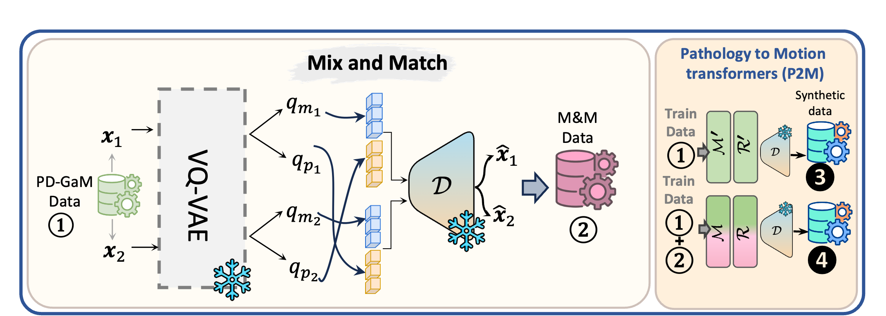
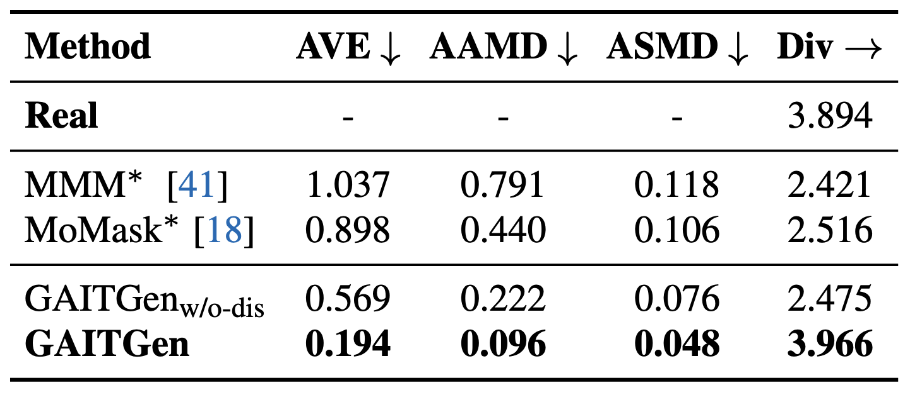
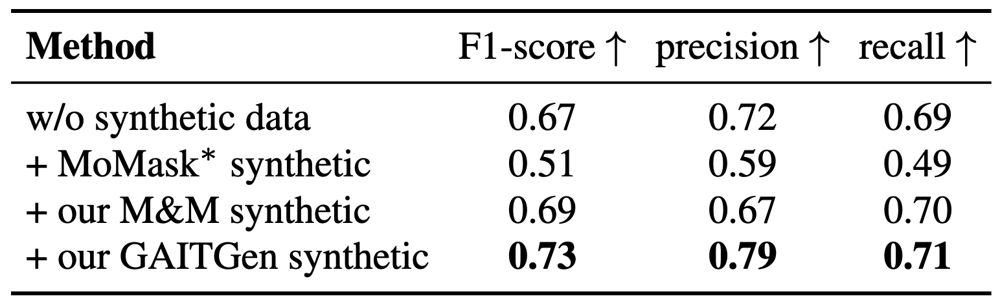
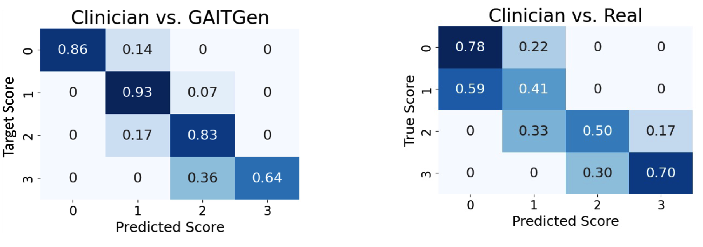
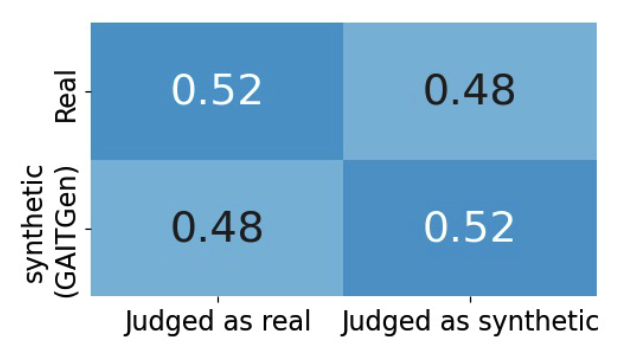
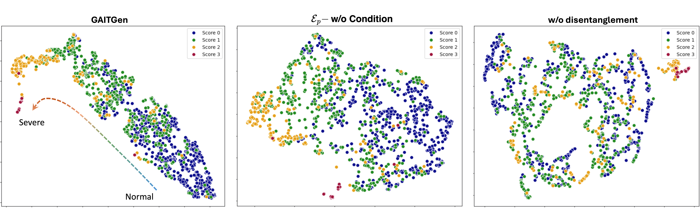

Gait analysis is crucial for the diagnosis and monitoring of movement disorders like Parkinson's Disease. While computer vision models have shown potential for objectively evaluating parkinsonian gait, their effectiveness is limited by scarce clinical datasets and the challenge of collecting large and well-labelled data, impacting model accuracy and risk of bias.
To address these gaps, we propose GAITGen, a novel framework that generates realistic gait sequences conditioned on specified pathology severity levels. GAITGen employs a Conditional Residual Vector Quantized Variational Autoencoder to learn disentangled representations of motion dynamics and pathology-specific factors, coupled with Mask and Residual Transformers for conditioned sequence generation.
GAITGen generates realistic, diverse gait sequences across severity levels, enriching datasets and enabling large-scale model training in parkinsonian gait analysis. Experiments on our new PD-GaM (real) dataset demonstrate that GAITGen outperforms adapted state-of-the-art models in both reconstruction fidelity and generation quality, accurately capturing critical pathology-specific gait features. A clinical user study confirms the realism and clinical relevance of our generated sequences. Moreover, incorporating GAITGen-generated data into downstream tasks improves parkinsonian gait severity estimation, highlighting its potential for advancing clinical gait analysis.

We combine motion features from one subject with pathology features from another to synthesize new gait sequences. This boosts diversity in rare severe cases and improves model training.

Comparison of GAITGen with baselines on the pathology-conditioned motion generation task. “*” denotes baseline trained on PD-GaM. “→” the closer to real the better.

The effect of synthetic data on downstream UPDRS-gait classification. M&M denotes Mix and Match augmentation and *indicates the model is trained on PD-GaM.

User study comparing clinician scoring of gait sequences with the true labels. True scores indicate (Left)-synthetic subset: condition given to GAITGen for sequence generation, (Right) Real subset: UPDRS-gait score provided by the PD-GaM dataset.

User study on distinguising real vs. synthetic data generated by GAITGen.

UMAP visualizations of the latent space representations under different settings. The left panel shows GAITGen with well- clustered latent representations aligned with UPDRS-gait scores. The middle panel represents the latent space when Ep is unconditional, exhibiting overlap among classes. The right panel shows the results without disentanglement, further highlighting increased overlap and less separation of latent clusters.
"A character is running on a treadmill."
Zero 1
@article{adeli2025gaitgen,
author = {Vida Adeli, Soroush Mehraban, Majid Mirmehdi, Alan Whone, Benjamin Filtjens,
Amirhossein Dadashzadeh, Alfonso Fasano, Andrea Iaboni, Babak Taati},
title = {GAITGen: Disentangled Motion-Pathology Impaired Gait Generative Model -- Bringing Motion Generation to the Clinical Domain},
eprint = {arXiv preprint arXiv:.....},
year = {2025},
url = {https://arxiv.org/abs/.....}, }